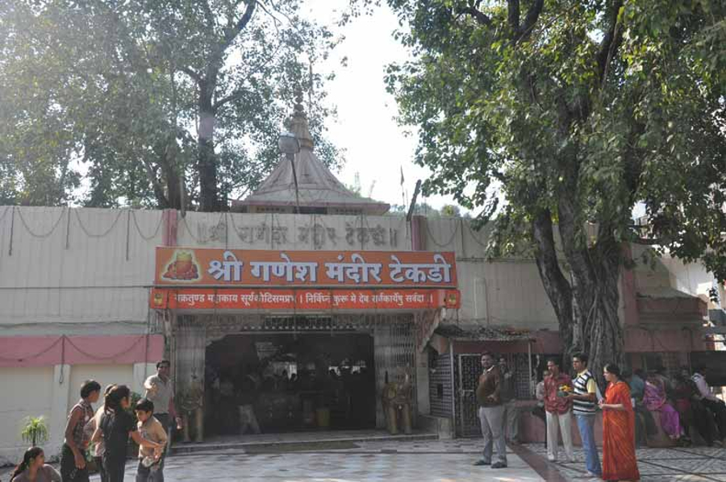
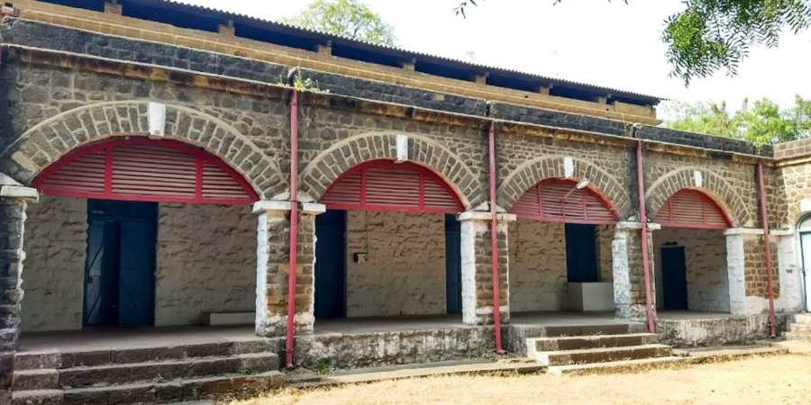
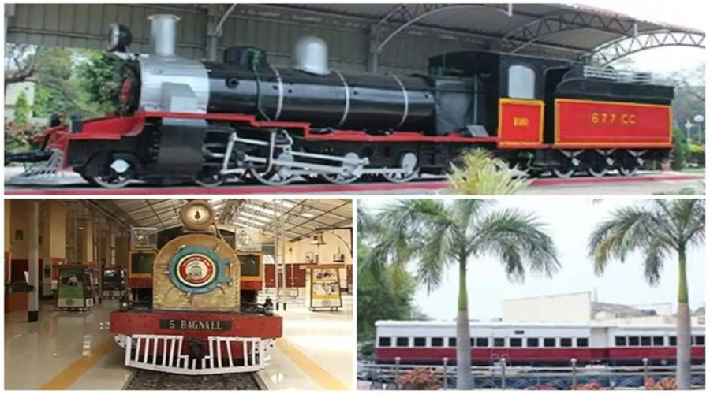
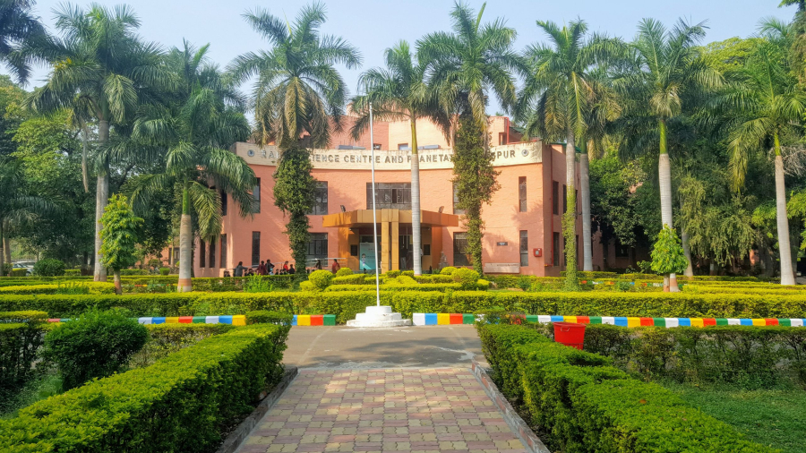
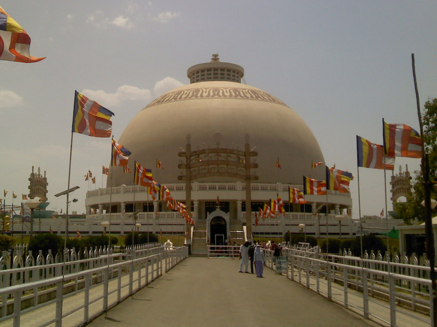
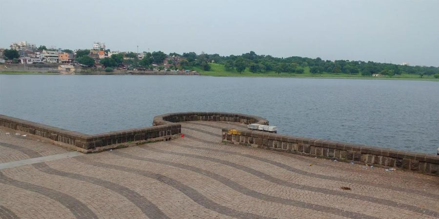

Take a tour of Nagpur, the orange city.
Nagpur is a large city in the central Indian state of Maharashtra. The 19th-century Nagpur Central Museum displays items found locally, including fossils, sarcophagi and Mughal weaponry. The Raman Science Centre has hands-on exhibits and a planetarium. Sitabuldi Fort, in the Sitabuldi Hills, was the site of an 1817 battle. To the southwest, the immense, domed Deekshabhoomi is a Buddhist monument and pilgrimage site.
Shri Ganesh Temple Tekdi
Ganesh Tekdi Temple also known as "Takdicha Ganapati" means Ganpati of hills. Situated atop a hill on Station Road, this temple is about 250 years old and has immense religious significance for Hinduism. The construction of the temple started in 1978 and was completed in 1984. Late Ganpatrao Joshi and other devotees enthusiastically participated in the construction of Shri Ganesh Tekdi Temple. The presiding deity of the temple is Lord Ganesha and it is believed that the idol of the Lord is Swayambhu, who originated from the land itself.
Sitabuldi Fort
Sitabuldi Fort site of the Battle of Sitabuldi in 1817, is located atop a hillock in central Nagpur, Maharashtra, India. The fort was built by the British after they won this area following the battle of Sitabuldi.
A memorial has been built inside the fort to commemorate the death of soldiers during the war. The fort is currently in the possession of the Indian Army and remains open for public visits on national holidays. The star attraction of the fort is the cell where Mahatma Gandhi was imprisoned.
Narrow Gauge Rail Museum
he Narrow Gauge Rail Museum is a unique museum at Kempty Road, Nagpur. It serves as an information park, which provides information on the functioning of the narrow gauge system and is spread over an area of 5.6 acres. The museum is dedicated to preserve the eventful history of the Indian Railways. It has galleries with working models of trains on display, logos of various state railways, genuine narrow gauge rolling stock steam engines, photographs, exotic locomotives and builder plates.
It is mainly meant for the visitors wishing to have a glimpse of the heritage of the Railways. In addition, the museum also houses an amusement park for children, toy trains and a rare collection of tickets.
Raman Science Centre and Planetarium
The Raman Science Centre and Raman Planetarium Complex at Nagpur is an interactive science centre affiliated with Mumbai's Nehru Science Centre. The centre was developed to promote a scientific attitude, portray the growth of science and technology and their applications in industry and human welfare, and hold science exhibits. The centre is named after famous Nobel Prize winner Indian physicist Chandrasekhara Venkata Raman.
The centre carries out numerous programs to spread science and technology knowledge amongst the general public. The centre has started innovation centre from 14 February 2017, that gives opportunities to students, who are dedicated to science. The centre along with local NGO Hirwai gives the Green Finger Award to create awareness about the environment amongst school children.
Deekshabhoomi
Deekshabhoomi is a sacred monument also known as Dhamma Chakra Stupa, located about 5 km southwest of Nagpur city. Deekshabhoomi is a historical place in India where about 600,000 people were converted from Hinduism to Buddhism in a single instant on 14 October 1956. These people were lower class people who had converted under the leadership of Dr. Babasaheb Ambedkar.
Diksha Bhoomi hosts the memorial of Ambedkar and has been given the status of A-class tourism and pilgrimage site by the Government of Maharashtra. Deekshabhoomi is famous for its architectural beauty and historical importance. It is one of the major centers of tourism in India.
Futala Lake
Futala Lake is a lake located in Nagpur in the Indian state of Maharashtra. Popularly also called Telankhedi Lake, it is located 6 km north of the city center and is believed to be more than 200 years old. The Futala Lake was built by Raja Bhonsle and is spread over 60 acres. The lake is surrounded by green forest on three sides and Chowpatty on the other side.
The main attractions of the place are the colorful fountains and halogen lights which turn it into a breathtaking view in the evening. Lush greenery, carriage rides, restaurants nearby, plethora of open spaces qualify it as a perfect place to rest one's weary nerves.
Video